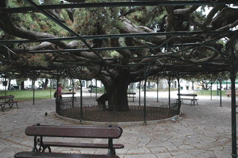
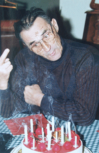

|
Descubra Lisboa e o Bairro Alto
|
AS NOTÍCIAS DO BAIRRO ALTO E DE LISBOA
MEADOS DE JULHO A MEADOS DE AGOSTO: Lisboa Mexe-me Espectáculos de rua gratuitos nos bairros antigos de Lisboa.
JUNHO DE 2006: os Santos Populares 12 e 13 de Junho de 2006: Festa de Santo António, o santo padroeiro de Lisboa. 24 de Junho: Festa de São Pedro 29 de Junho: Festa de São João Venham todos festejar os nossos santos. A música, as danças, os desfiles, as cores, e evidentemente os fogos de artifício estarão reunidos nas zonas históricas da nossa cidade: em Alfama, no Castelo, na Mouraria e evidentemente no Bairro Alto.
26 DE JUNHO DE 2006: ajuste de contas no nosso bairro Apresentamos um artigo publicado no jornal esta manhã: "A Sra. Carmo G. residente na Rua de Buenos Aires, n.º 4, descobriu em frente da porta do seu edifício, na segunda-feira, dia 12 de Junho, pelas 6 horas, o corpo inanimado de um homem de cerca de cinquenta anos. A senhora alertou imediatamente o seu vizinho médico que não pôde senão constatar o falecimento e avisar a polícia. O comissário Fernando Antunes da Polícia Judiciária deslocou-se imediatamente ao local. Está em decurso uma autópsia e esta deverá possibilitar conhecer com precisão a hora e as causas exactas da morte. Segundo as primeiras inquirições pela polícia, o homem teria sucumbido a poderosos golpes violentos, sem dúvida por vários indivíduos, sobre o rosto e no corpo. A identidade da vítima foi revelada já de manhã. Trata-se de João Amerim, bem conhecido dos habitantes do bairro pelas suas actividades no seio de um clube de póquer situado não longe do local do drama. O Sr. Amerim levava uma vida tranquila. Segundo o seu amigo Caetano Bragança, João havia recebido recentemente ameaças de morte em sequência de um negócio obscuro de extorsão. O comité de comerciantes do bairro, entre os quais alguns afirmam ter sido igualmente vítimas de extorsão decidiram fechar as suas lojas na próxima segunda-feira como forma de protesto contra este drama terrível. As exéquias pela vítima terão lugar segunda-feira, dia 15 de Junho, pelas 15 horas no Cemitério dos Prazeres".
O comissário Fernando Antunes
Esperamos que o bairro não venha a ceder ao pânico e que isto não venha a ter repercussões na Festa de João.
12-13 DE MAIO DE 2006 Peregrinação a Fátima para a comemoração da última aparição da Virgem. Procissão de Velas, dia 12 de Maio (nocturna). Procissão do Adeus, dia 13 de Maio. http://www.rt-leiriafatima.pt
MAIO DE 2006: Não falte aos eventos de Maio Venha instalar as suas cadeiras na rua para assistir aos eventos de Maio. Este ano, mais uma vez, os estudantes preparam-nos um formidável desfile de moda a não perder.
25 DE ABRIL DE 2006 Festa da revolução dos cravos de 1974.
08 DE ABRIL DE 2006, 16 H Grande torneio de sueca para pequenos e graúdos, este domingo, dia 8 de Abril, pelas 16 horas na Praça do Príncipe Real. Venha ter connosco junto das mesas de jogo no maior casino ao ar livre. 
07 DE MARÇO DE 2006 O meu amigo Pedro Machado faleceu a noite passada. Penso que aqueles que o conheciam tão bem quanto eu guardarão por muito tempo na memória a imagem deste homem, instalado diante da sua casa, com um fogareiro ao seu lado, a assar sardinhas.
 Pedro na festa dos seus 76 anos
FEVEREIRO/MARÇO DE 2006: o carnaval das crianças. A data exacta ainda não foi fixada mas podemos confiar nos nossos miúdos para correr a cidade em busca de doces.
FEVEREIRO DE 2006: Exposição Frida Khalo O Centro Cultural de Belém acolhe, de 17 de Fevereiro a 14 de Maio, a exposição mais importante a nível mundial sobre a colecção de Frida Khalo.
DE 01 A 09 DE FEVEREIRO DE 2006 A terceira edição do Festival das Músicas e dos Portos para honrar os cantos ancestrais portugueses.
22 DE JANEIRO DE 2006 Os portugueses começam a agitar-se em relação às próximas eleições presidenciais. Cavaco Silva é apoiado pela direita e Mário Soares, o "Pai da democracia portuguesa" é apoiado pela esquerda.
JANEIRO "tudo isto é fado", como diz a canção.
|
|